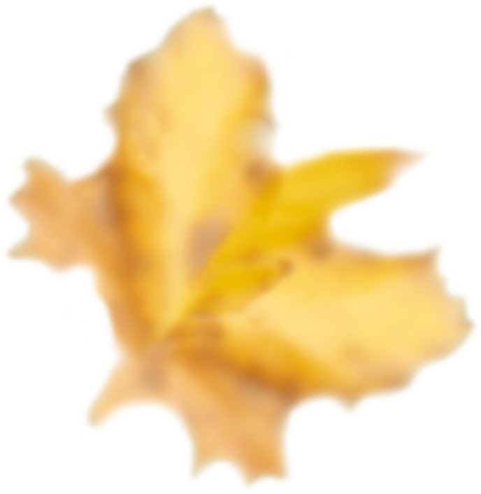
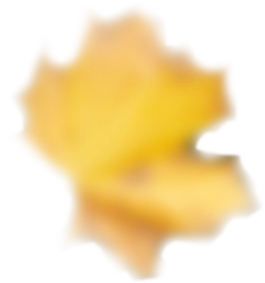
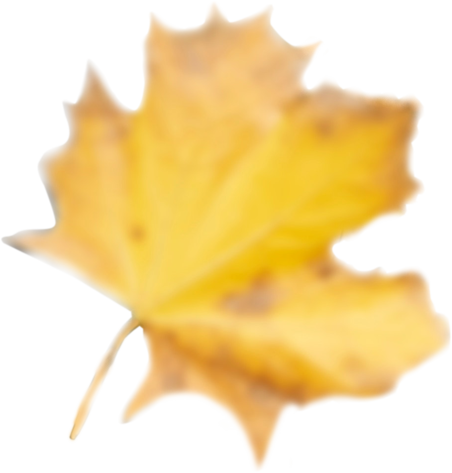
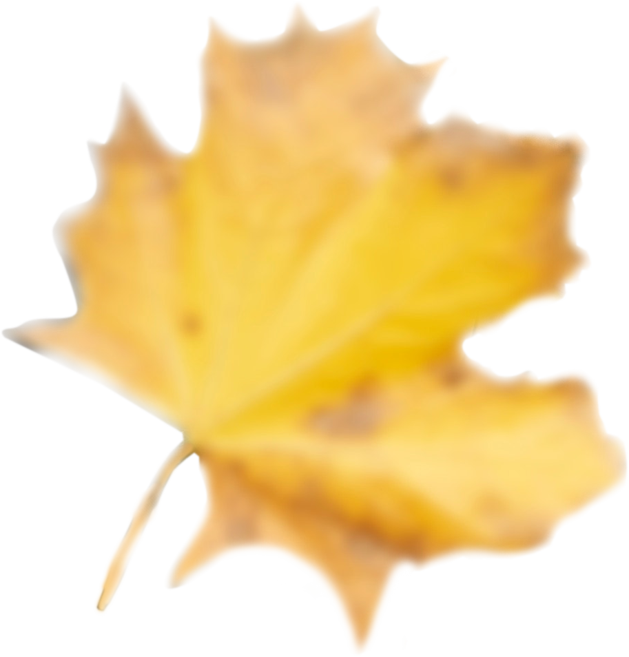

Om oss
  

Mossingan familiebarnehage eies og drives av Ann-Lisbeth Stavlund og Eva Høyem Anderssen. Barnehagen er en familiebarnehage, som vil si at en assistent kan ta imot fem barn i et privat hjem. Siden 2007 har barnehagen hatt godkjenning for tre barnegrupper.
Barnehagen er tilknyttet Mossing samdrift som driver med kjøtt-, melk- og kornproduksjon, og i 2007 ble det bygget et smådyrfjøs som barnehagen benytter seg av. Barnehagen har også flotte turområder i nærområdet, med skog, fjell og vann. Blant annet har vi et lavvo-område hvor det er satt opp en hytte med vedovn og en naturlekeplass laget i samarbeid med Høgskolen i Nord-Trøndelag (nå Nord universitet). I 2012 ble Mossingan familiebarnehage godkjent som lærlingebedrift i barne- og ungdomsarbeiderfaget. Den er også godkjent øvingslærerbarnehage for førskolelærerutdanningen ved Nord universitet.
Vi elsker dyr
Det å vokse opp med dyr kan ha flere gunstige effekter. Blant annet lærer barna å vise empati og ta hensyn, samtidig som de lærer om ansvar. Det er dessuten viktig å få et innblikk i hvor det vi spiser kommer fra, spesielt i dagens samfunn hvor det kastes så mye mat. For å bli bedre kjent med noen av dyrene våre, se «Våre dyr».
Trygghet
For oss i Mossingan familiebarnehage er trygghet en av de viktigste byggesteinene når det kommer til barns utvikling og livsmestring. Vi skaper nære og gode relasjoner til barna, slik at de føler seg trygge i våre omgivelser. På denne måten får barna muligheten til å utforske omverden og skape stabile, sosiale relasjoner. Trygghet er viktig for tilhørighet, noe som er grunnleggende for alle mennesker, også barn.
Priser
Under finner du en kalkulator med prisene til Levanger kommune. Prisene er gjelder fra 1. august til 31. desember 2019. Ønsker du å ha flere barn i barnehagen, så tar også kalkulatoren hensyn til dette. Det gis søskenmoderasjon med 30 prosent for to barn, og 50 prosent for tre og flere barn. I tillegg kan du legge inn hvor mye du ønsker å ha barnet/barna i barnehagen i form av prosent.